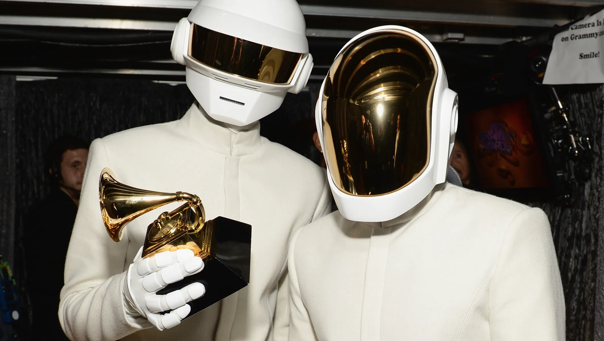
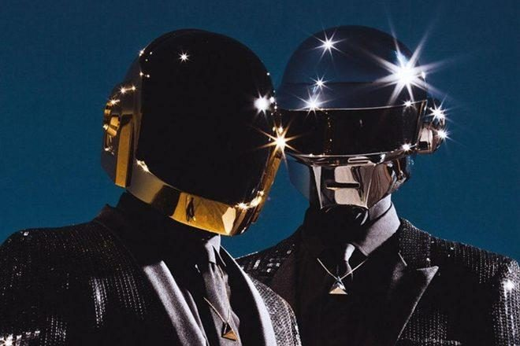

Thomas Bangalter ve Guy-Manuel de Homem-Christo, Paris’te lise yıllarında tanıştı. İlk başta, rock müziğine meraklı iki genç olarak, 1992 yılında Darlin’ adında bir rock grubu kurdular. Bu grup, The Beach Boys’un bir şarkısından esinlenmişti. Ancak, Darlin’ çok uzun ömürlü olmadı. Grup, Fransız müzik eleştirmenlerinden biri tarafından “aptal punk” (daft punk) olarak tanımlandı. Bu olumsuz yorum, ironik bir şekilde, grubun gelecekteki ismine ilham kaynağı oldu. Bangalter ve Homem-Christo, bu eleştiriyi olumlu bir şekilde ele alıp grup isimlerini Daft Punk olarak değiştirdiler ve tamamen yeni bir müzik tarzına yöneldiler: elektronik müzik.
1990'ların ortalarına gelindiğinde, Daft Punk, Fransız elektronik müzik sahnesinin yükselişinde önemli bir rol oynamaya başladı. İlk büyük çıkışları, 1995 yılında yayımlanan "Da Funk" single'ıyla geldi. Bu parça, dans pistlerinde büyük ilgi topladı ve elektronik müzik çevrelerinde adlarını duyurmalarını sağladı.
1997'de Daft Punk, ilk albümleri "Homework" ile global bir başarı yakaladı. Albüm, o dönemde elektronik müziğin evrimini simgeleyen bir başyapıt olarak kabul edildi. "Around the World" ve "Da Funk" gibi parçalar, uluslararası dans sahnesini salladı ve Daft Punk’ı elektronik müziğin öncüleri arasına yerleştirdi.
Daft Punk’ı farklı kılan unsurlardan biri de gizemli imajları oldu. 2001’de çıkardıkları "Discovery" albümü döneminde, ikili sahnede ve kamuoyu önünde robot maskeleri takarak göründü. Bu, sadece onların estetik bir tercihi değil, aynı zamanda müzik dünyasında anonimlik ve sanatı ön plana çıkarma konusundaki felsefelerinin bir yansımasıydı. Daft Punk’ın yüzleri yerine müziklerinin konuşmasını istediler ve bu robot imajı, onların global tanınırlığını artırdı.
"Discovery" albümü, daha melodik ve pop etkili bir elektronik müzik tarzına sahipti. "One More Time", "Digital Love" ve "Harder, Better, Faster, Stronger" gibi hit parçalarla, elektronik müziğin ana akımda daha fazla kabul görmesini sağladılar.
Daft Punk’ın yenilikçi ruhu, sadece müzikle sınırlı kalmadı. 2003 yılında, "Discovery" albümüne dayanan “Interstella 5555” adlı bir animasyon filmi yayımladılar. Bu film, Daft Punk'ın albümünü bir uzay operası anlatısıyla birleştirdi ve müzik videolarına sanatsal bir boyut ekledi.

2010 yılında, Disney’in "Tron: Legacy" filmi için yaptıkları film müzikleri, elektronik müzikle sinemayı buluşturdu. Bu soundtrack, hem film eleştirmenlerinden hem de dinleyicilerden büyük beğeni topladı ve Daft Punk’ın müzikal yeteneklerinin ne kadar geniş bir yelpazeye yayıldığını gösterdi.